Next: Bode Plots of Components
Up: Bode
Previous: Decibel (dB)
The Bode plot is named after
Hendrik Wade Bode (1905 - 1982), an American engineer and scientist, of Dutch ancestry,
a pioneer of modern control theory and electronic telecommunications.
The frequency response function (FRF) is a complex function of the
frequency 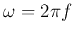 that describes the response of a system to input of
different frequencies:
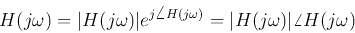
The Bode plot presents both the magnitude 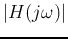 and phase
angle
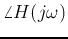 of 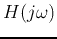 as functions of frequency in
logarithmic scale. (Zero frequency is at 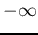 as
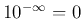.)
Moreover, the magnitude
is also represented in logarithmic
scale in decibel (dB), and is called log magnitude.
A Bode plot is composed of two parts:
- The log magnitude (Lm) of with unit decibel (dB):
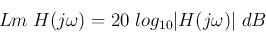
- The phase plot
with either in radian or degree.
The logarithmic scale of the frequency is composed of several ``decades'' each
for a range of frequencies from 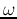 to 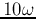, independent of the
specific frequency .
Bede plots have the following advantages:
- Due to the logarithmic scale in frequency, large frequency range of
several orders of magnitude can be represented;
- Convenient straight line asymptotes can be used to approximate the plots;
- The behavior of the system in terms of the magnitude, even
approaching zero, can be clearly described.
- Due to the logarithmic scale of the magnitude of the FRF, multiplications
and divisions of FRFs can be represented as addition and subtractions in the
plot (while the phases are always added/subtracted):
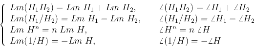
All FRFs of interest in this course can be considered as a combination of
some components or building blocks, including:
- Constant gain 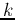;
- Integral/derivative factors 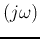
- Delay factor:
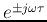;
- First-order factor
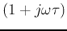;
- Second-order factor
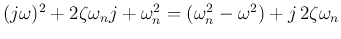
Given the Bode plot of any building block , we can obtain the plots
of any combination of them.
We will first consider each of such components at a time, and then consider
their combinations. In particular, we will study the first order system:
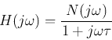
and the second order system:
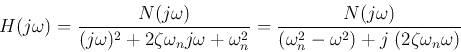
Next: Bode Plots of Components
Up: Bode
Previous: Decibel (dB)
Ruye Wang
2018-07-23